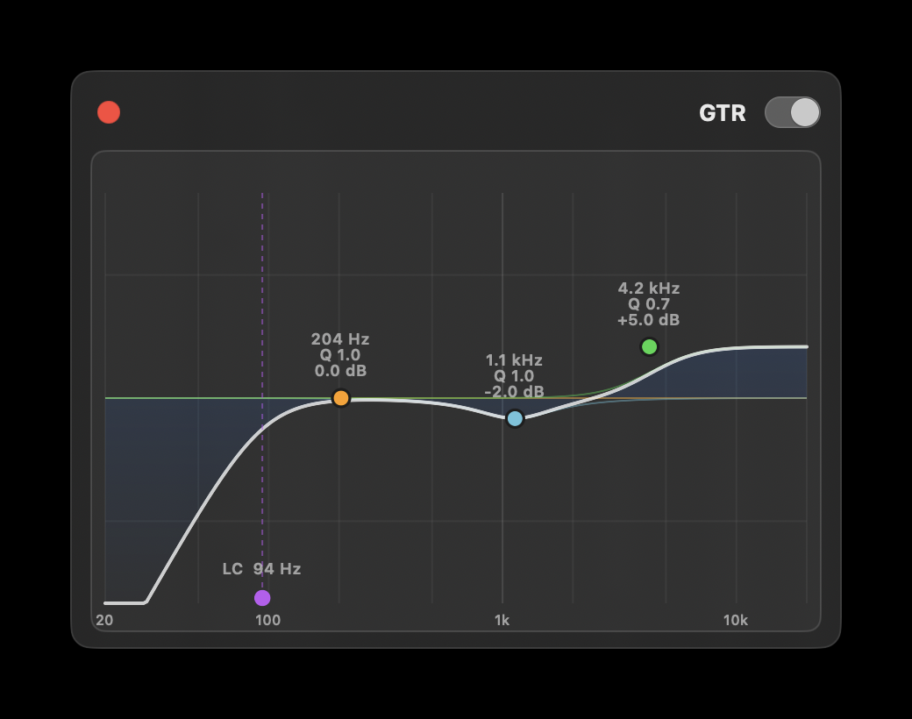
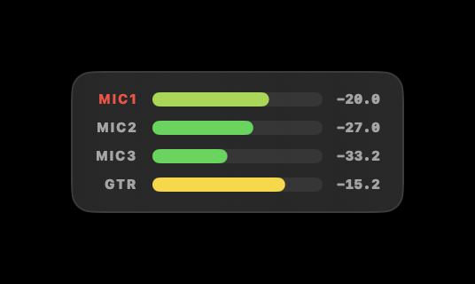

TotalMix in the menu bar
Menu bar open-source application for controlling RME audio interfaces via TotalMix FX.
Works via Global OSC only with TotalMix 2.1+. Runs on macOS 14 or newer, Apple Silicon and Intel.

What the popover opens



Above every window
Every input gets a bar, its value in dB, and red when it clips.
Everything else the app does is listed below.
Everything in the app
Outputs
- Volume keys
- Any output, 1 to 10 dB a step
- Dim and mute
- On the Mac mute key, either one
- Mono
- Shift Cmd M
- Speaker B
- The second pair of monitors
- Output switch
- Option Up or Down, optionally muting the rest
- Channels
- Edit, rename, add and remove
- Sends
- From any input to any output
Inputs
- Phantom power
- +48V on any number of channels
- Instrument mode
- Inst per channel
- EQ
- Four bands a channel
- Compressor
- Threshold, ratio, attack, release, gain
- Meters
- Input, gain reduction and output
Interface
- Levels window
- Always on top
- Clipping
- Flagged in red
- Notifications
- Volume, Dim, Mono, Mute, also from TotalMix
- Mute notice
- Names the silent output
- Menu
- Customizable
- Presets
- Save and restore every setting
- Shortcuts
- Every one can be reassigned
- Languages
- 14
TotalMix
- Synchronization
- Two-way, read at launch
- Fail-safe
- Values freeze, keys return to macOS
- OSC monitor
- Watch the network commands in Connection
Remote control
- Web server
- One toggle in Settings
- QR code
- Opens the remote on a phone in the same Wi-Fi
Install in four steps
-
01
Download RME-Control-3.8.pkg and open it.
-
02
Not notarized: allow it once under Privacy and Security. The installer clears the quarantine flag.
-
03
If macOS still refuses to open it, take the app out of quarantine:
xattr -dr com.apple.quarantine \ "/Applications/RME Control.app"
-
04
Grant Accessibility in the same pane so the volume keys reach TotalMix.
On the label
- Version
- 3.8
- System
- macOS 14 Sonoma or newer
- Architecture
- arm64 and x86_64, one universal build
- Interface
- 14 languages
- License
- MIT